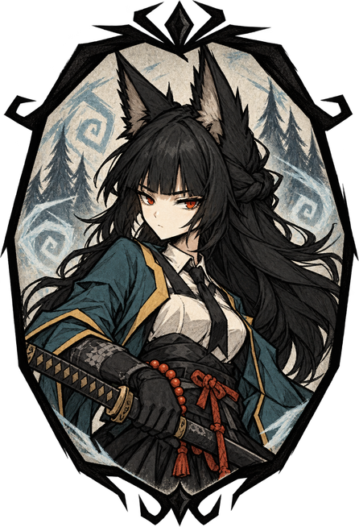
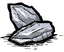
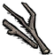
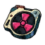
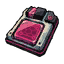
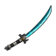
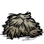
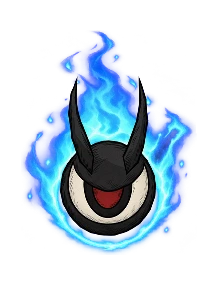

战斗天赋
武痴狐狸
免疫生物的负理智光环。生物的正理智光环仍然生效。
暴击
暴击命中并实际造成伤害时，飞雪与霜染寒星的冷却时间各缩短 0.5 秒。命中多个目标时分别结算；同一次命中对同一目标造成的混合伤害只结算一次。
烈霜异常
妖刀第 3～5 刀与飞雪命中时，分别积蓄 10 × 异常掌控 ÷100 与 20 × 异常掌控 ÷100；未加成时为 11.6 / 23.2。
烈霜与冰共用一根 100 点冰异常条。满条结算异常伤害，并尝试冻结目标；冻结仍受目标免控限制。查看异常结算规则 →

如无特殊说明，伤害均可暴击。
星见雅是近战冰冻角色。服务端及所有客户端均需启用星见雅角色模组与前置的 绝区零公共模组 0.5.73 或更新版本。
查看配置、实现状态与版本说明 →免疫生物的负理智光环。生物的正理智光环仍然生效。
暴击命中并实际造成伤害时，飞雪与霜染寒星的冷却时间各缩短 0.5 秒。命中多个目标时分别结算；同一次命中对同一目标造成的混合伤害只结算一次。
妖刀第 3～5 刀与飞雪命中时，分别积蓄 10 × 异常掌控 ÷100 与 20 × 异常掌控 ÷100；未加成时为 11.6 / 23.2。
烈霜与冰共用一根 100 点冰异常条。满条结算异常伤害，并尝试冻结目标；冻结仍受目标免控限制。查看异常结算规则 →
miyabi_wuwei
3 秒内不使用妖刀普攻，重置普攻段数。
砍树：妖刀每次砍伐的工作量与普通斧头相同，星见雅持刀砍树的频率为普通的 1.4 倍。普通妖刀每次砍树消耗 1 点耐久，与攻击共用 200 点；升级后无限耐久。砍树不影响五刀连段。
冰伤享受冰伤加成与暴击，无视普通护甲和位面防御，但受位面实体抵抗影响；无敌、闪避、屏障与阶段保护仍然生效。物理段不积蓄冰异常，冰段命中与飞雪按异常掌控积蓄。
装备妖刀后瞄准有效地形发动，造成双倍武器基础的冰伤（20），升级后的武器位面伤害也翻倍（20）。无法冻结的目标另加 10 点冰伤。冷却 3 秒，实际冲刺期间无敌。
默认无前摇，可选 15 帧（0.5 秒）或 30 帧（1 秒）。旧世界保存的前摇选择仍生效，可手动修改。
燧石 ×4 + 金块 ×2 +
树枝 ×2 科学机器 · 星见雅专属 · 冒险家物品分类
组件 ×20
能源 ×20
给予 1 个金块恢复 50 点耐久，上限 200 点。耐久耗尽后妖刀破损并自动卸下，修复后可重新装备。
消耗 20 个特化型异常组件和 20 个音擎能源模块，获得无限耐久和 10 点基础位面伤害。
打开升级窗口装备后右键武器格；破损或放在地上的妖刀也可右键升级。
上组件，下能源上格放特化型异常组件，下格放音擎能源模块，各至少 20 个。
关闭窗口完成升级材料齐全时消耗材料并升级，余料退回；材料不足时保留进度。升级也会修复破损妖刀。
升级后保留闪电标记，右键武器格可卸下；对地右键仍施放飞雪。
不再接受约束静电升级；旧存档已升级的妖刀保持升级状态。
miyabi_pack
出生自带，不显示背部外观。有独立背部栏时穿在 BACK，否则使用身体栏；也可放入物品栏。
| 等级 | 容量 | 升至本级所需材料 | 星见雅穿戴加成 |
|---|---|---|---|
| 1 级 | 8 格 | 出生获得 | 暴击率 +8% · 基础攻击 +5 |
| 2 级 | 12 格 | 组件 ×20 + 能源 ×20 | 暴击率 +16% · 基础攻击 +10 |
| 3 级 | 14 格 | 组件 ×40 + 能源 ×40 | 暴击率 +24% · 基础攻击 +15 · 位面 +15 |
对背包本体或物品图标使用“升级”，两种材料可分批给予，多余部分退回。满级共需各 60 个；地面、物品栏和穿戴时均可升级。
把材料放入背包只会收纳；不再接受金块升级。每次给予会显示当前等级和进度。
穿戴霰落星殿时，免疫一次攻击，并按该次防御前普通与特殊伤害总和的 10% 恢复生命。冷却 10 秒，换装不会刷新。
破盾向半径 1 世界单位内符合条件的敌人施加 1 冰冻值，遵守目标抗性；背包图标显示冷却轮转。触发时出现冰蓝色护盾效果，视觉大小不代表冰冻范围。
穿戴时发梢泛蓝；同时手持妖刀时，刀根出现幽火、刀身出现流光。效果不增加伤害或照明。
卸下背包、死亡或变为灵魂时清理外观，读档和复活后按装备恢复。护盾冷却属于角色，换包不刷新。没有独立背部栏时，背包与晓·围巾共用身体栏；有 BACK 栏时可同时装备。
原有等级保留。旧金块未完成进度每 5 个折算两种材料各 1 个，余数向上取整，但至少仍需两种材料各 1 个才能升级；迁移只执行一次。已有新材料进度与物品正常保存。
miyabi_hairclip
有独立饰品栏时使用 NECK，否则使用 HEAD。任意佩戴者的普通与特殊 / 位面输出均获得 ×1.1 增幅，仍经过目标防御。无耐久，始终不增加额外装备外观。
穿戴时周身出现淡黄四角星，并持续照明，照明范围为启迪之冠的 1.5 倍。卸下或死亡后清理星光与照明，物品栏及落地状态不发光。
miyabi_dawn_hat
头部装备，无耐久。春夏隔热 240，秋冬保暖 120，随季节切换；开启“隐藏帽子”时仍显示。
拿起一把眼球伞对帽子执行“升级”，消耗眼球伞，永久获得 100% 防雨。升级随帽子保存，季节保温、外观与帽内发卡功能保留；已升级的帽子不再接收眼球伞。
星见雅佩戴时保留狐耳。没有独立 NECK 栏时，戴帽会打开帽子上方的单格，只接受星见雅的发卡；放入后随戴帽生效，理智恢复只计算一次。摘帽或死亡后停止发卡效果。
有独立 NECK 栏时，发卡直接穿在饰品栏，帽内格关闭。旧存档帽内的发卡会退回物品栏，装不下则落地。
miyabi_dawn_scarf
身体装备，无耐久，全年保暖 120；秋冬与帽子叠加可达 240。开启“隐藏护甲”时仍显示。
围巾固定使用身体栏。霰落星殿没有独立 BACK 栏时也使用身体栏，两者不能同时穿戴。
miyabi_dawn_bag
随身收纳的四格挎包。
物品栏右键开关，无需穿戴；移动或丢下时窗口关闭，物品保留。
挎包不能装入其他容器、背包或捆扎包；挎包本身可放入普通箱子。

牛毛 ×4 + 金块 ×4 科学机器 · 星见雅专属 · 冒险家物品分类miyabi_xiaowuwei
黑色双角与红色独眼，环绕青蓝幽火的漂浮伙伴。
星见雅自动拥有，三套衣装共用，旧存档重进也会出现。停下时舒缓浮动，跟随时节奏加快，约每 3–6 秒自然眨眼。
跟随角色侧方 2.4 世界单位；距离过远时回到身边。死亡或变为灵魂时消失，复活后返回。
仅作跟随展示，没有战斗、生命或储物功能。

默认衣装、银庭花信与「晓」均随模组提供，共享角色能力、出生物品与专属灵魂。
 衣柜简笔画
衣柜简笔画
深色衣装与长发，保留标志性的发卡、袖饰和高跟鞋。
专属灵魂
三套衣装共用，复活后恢复所选衣装。角色资料页会随当前衣装切换肖像。
角色与三套衣装、专属灵魂、武痴狐狸特质、小无尾伙伴、妖刀及其五段普攻刀光、飞雪与冲刺音效、背包、发卡、季节装备、升级材料、暴击减冷却、共享冰异常、护盾反馈、驱动盘界面及 HUD 拖动均已加入。折枝剑歌的装配与套装效果、音像店制作拆解、空洞木箱与加载壁纸轮播、专属移动动作已加入；角色专属语音尚未实现。
星见雅｜0.4.63
绝区零｜0.5.79
更新后请完全退出并重启游戏，服务端与客户端同时更新两个模组。
依据本地星见雅 0.4.63 与公共模组 0.5.79 源码核对，更新于 2026 年 11 月 1 日。游戏内效果仍待实机验证。
星见雅模组反馈交流群号：1131834002